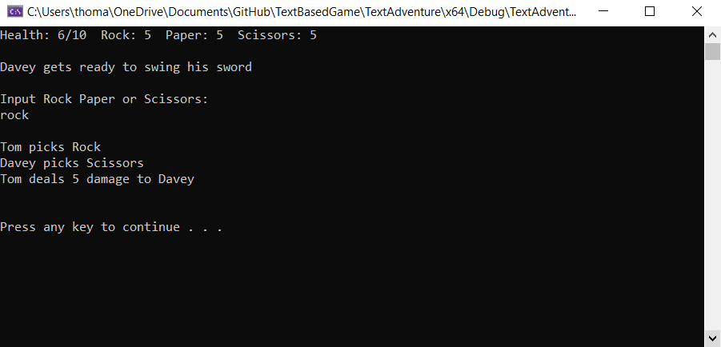
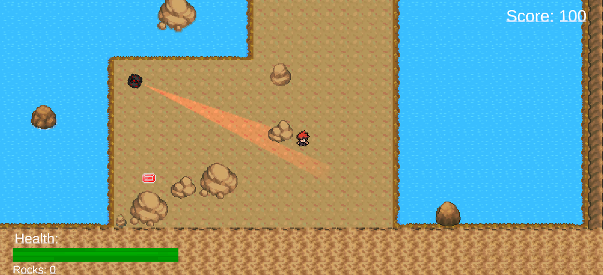
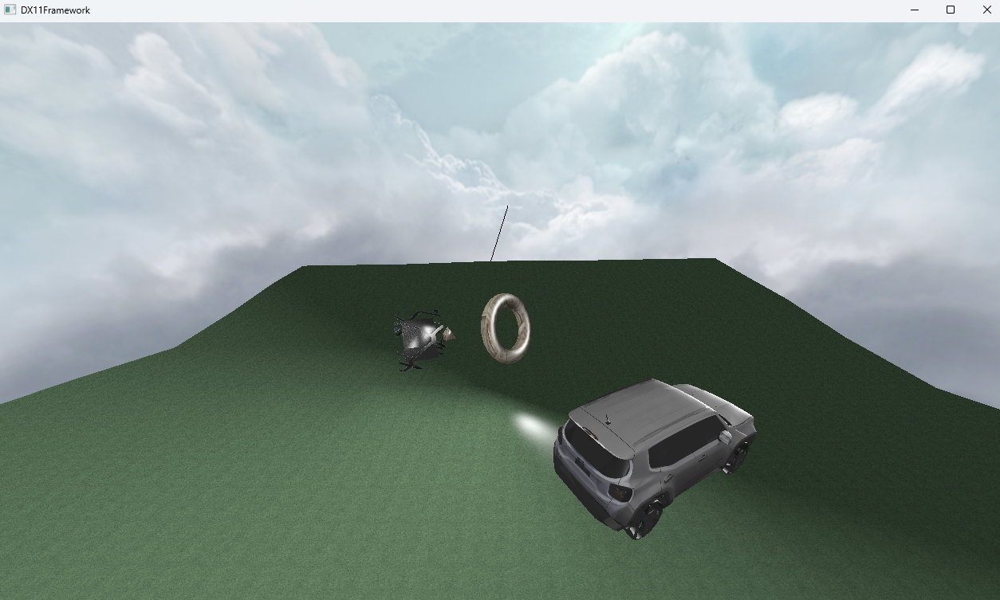
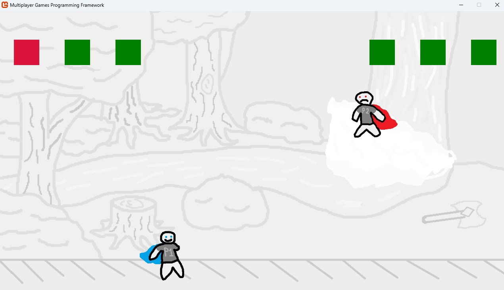

Games I have made and what I have learned from them
On this page I will record some of the games that I have made, this will be some for uni projects and some i have worked on in my own time. This is all to show what i am capable of and my ability to learn fron doing any given project.
RPS QUEST

- C++
- Object Oriented Programming
- Github
- Making changes after play testing
This project was made specifically to be used on this portfolio as I thought a C++ Text based game would be perfect to show off my proficiency in C++ and any other programming concepts that would be needed. I use C++ specifically because it is efficient but also just what I most prefer to code in. Throughout the game I use loops to make sure any action the player uses that needs to be repeated can do so, Random Number Generation to make the enemies of the game attack randomly keeping the player on their feet and use of the input stream to allow the player to interact with the game. Due to being made in C++ the game is object oriented and there is a class for the player, the main game loop, the process of encountering an enemy and a class for each individual enemy which is a child of the parent enemy class. The parent enemy class contains parameters for each of the stats all enemies share as well as functions for what the enemy will do when they pick rock, paper or scissors and this can be overwritten by the child classes to change to the unique enemy types. Programming like this makes the code a lot more readable as well as easier to implement new enemies into given sections of the game.
Due to the relative simplicity of the project, I didn’t run into many major problems but there were a few notable difficulties. When I started the project, I was still a little unsure on how object-oriented programming works but as the project went on my understanding grew and I am now quite confident doing it and will be able to employ that in most of my major projects in the future. The other problem is much more specific as throughout the project the user is told to press enter to continue but for some reason C++ allows you to buffer those button presses and this would allow the user to make inputs for actions they have not yet been shown, I didn’t originally think this was a problem as when playing I knew to only press enter once but when the game was play tested I realised this completely broke the game and made it unplayable, to fix this I found a function that would take user input but would ignore any past input "system("PAUSE");". I think this project turned out well but there are a couple changes I will make in the future: I need to start commenting code as this will make it significantly easier to read as well as giving better titles and descriptions to my GitHub commits.
The game uses a somewhat simple game loop as it will be in one of 3 "states" of sort and transition between them to continue playing. The game will start with Text explain what is going on in the narrative before switching to an encounter and once the encounter is done the player will usually be given a choice to go further into the game or retreat to fight more enemies. During an encounter the player will be shown a prompt that alludes to what the enemy is going to do then given a choice of rock paper or scissors and this will repeat until either side loses all its health, if the player loses then the game will reset and if the enemy loses the game will continue.
Shadows fortune

- C#
- Unity
- Unity pathfinding
This project was made as some of my university coursework, the task was to make a game in unity using framework they provided. The game I made is a top-down stealth game with a points system to allow replay ability. The game uses the unity engine and utilises the systems within it and includes use of the 2D colliders, 2D rigid bodies and ray casts. Most of the game is made with C# scripts that are implemented into the GameObjects within unity.
During this project I did run into a few problems, two major ones where: when enemies would switch between searching states, they would desync so only some enemies would lock onto the player when they are alerted, and I had problems sideloading the UI to stay on screen when the player would end and restart the game as it was never gotten rid of. The problem with the enemy state changing was that enemies would come out of alert a certain time after the player was spotted but any enemy that spotted the player during alert would restart this timer whereas the others would not and would just return to normal. To solve this problem, I had to make the enemy, send a signal back to the alert controller for seeing the enemy even when an alert was active, so it doesn’t send the end alert signal timer back too quickly. The problem with the UI was that it would stay on screen for a second run of the game leading there to be 2 UI on screen which caused confusion this was solved by simply having the UI be destroyed by the script that controls the end screen and makes that appear.
The game is a stealth game where you have 8 directional movement from a top-down perspective when enemies spot the player, they will chase the player until either line of sight is broken for long enough or the player dies. Within the game there are three kinds of enemies: enemies that stay in place and rotate, enemies that strafe left and right but can only look in one direction and an enemy that will walk around until it spots the player where it hunts them down. Throughout the game there will be large games laid on the floor that give the player points when collected this it to add replaybility as it is more difficult to collect the gems and if the player dies, they will lose points so there is an element of risk and reward.
Graphics project

- C++
- hlsl
- Use of ShaderDoc
- utilisation of an obj loader
paragraph
paragraph
paragraph
Multiplayer game

- C#
- multithreadding
- multiplayer games development
- replication
paragraph
paragraph
paragraph